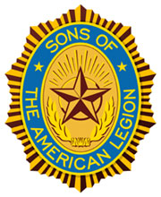

Leighton Evatt American Legion Post 365
1022 Vandalia StreetCollinsville, IL 62234
Phone: 618.345.2508



| SAL Images |
2025-2026 Post 365 Officers
| Commander | Mike Ziska |
| Senior Vice | Brandon Royer |
| Junior Vice | Dan Hopkins |
| Adjutant | Scott Littlefield |
| Finance Officer | Al Woolen |
| Chaplain | Mike Corvalis |
| Sergeant at Arms | Bill Truccano |
| Historian | Kevin Davis |
The Sons organization is divided into detachments at the state level and squadrons at the local level. A squadron pairs with a local American Legion post; a squadron’s charter is contingent upon its parent post’s charter. However, squadrons can determine the extent of their services to the community, state and nation. They are permitted flexibility in planning programs and activities to meet their needs, but must remember S.A.L.’s mission: to strengthen the four pillars of The American Legion. Therefore, squadrons’ campaigns place an emphasis on preserving American traditions and values, improving the quality of life for our nation’s children, caring for veterans and their families, and teaching the fundamentals of good citizenship.
Since 1988, S.A.L. has raised more than $6 million for The American Legion Child Welfare Foundation . S.A.L. members have volunteered over 500,000 hours at veterans hospitals and raised over $1,000,000 for VA hospitals and VA homes. The Sons also support the Citizens Flag Alliance, a coalition dedicated to protecting the U.S. flag from desecration through a constitutional amendment.
Sons Membership Eligibility Requirements
All male descendants, adopted sons and stepsons of members of The American Legion, and such male descendants of veterans who died in Service during World War I, World War II, the Korean War, the Vietnam War, Lebanon, Grenada, Panama, the Persian Gulf War and the War on Terrorism, during the delimiting periods set forth in Article IV, Section 1, of the National Constitution of The American Legion, or who died subsequent to their honorable discharge from such service, shall be eligible for Membership in the Sons of The American Legion.
There shall be no forms or class of membership except an active membership.
History
The Sons of The American Legion was created in 1932 as an organization within The American Legion . The S.A.L. is made up of boys and men of all ages whose parents or grandparents served in the United States military and became eligible for membership in The American Legion. Together, members of The American Legion, The American Legion Auxiliary and the Sons of The American Legion make up what is known as The Legion Family. All three organizations place high importance on preserving our American traditions and values, improving the quality of life for our nation’s children, caring for veterans and their families, and perhaps most importantly, teaching the fundamentals of good citizenship.
Sons have always assisted Legionnaires with Legion Family programs. Our Family boasts a combined total membership of nearly 4.2 million members. This year, Sons attained an all time high national membership of over 365,000. The largest Detachment, Pennsylvania, has over 61,000 members. Trophies and awards are given to Detachments and Squadrons for the largest membership and the largest increase in membership. Just as each Legion post determines the extent of its service to the community, state and nation, each S.A.L. squadron is permitted flexibility in planning programs and activities to meet its own needs. The S.A.L. has study programs recommended for younger members. One such program, called "The Ten Ideals," teaches the elements of patriotism, health, knowledge, training, honor, faith, helpfulness, courtesy, reverence and comradeship. If a member completes the Ten Ideals program, he is eligible to continue with another program called the "Five-Point Program of Service." This program covers patriotism, citizenship, discipline, leadership and legionism.
Sons focus on much more than just membership. At all levels, Sons support The American Legion in promoting a wide variety of programs. Sons assist their posts in other activities such as Veterans programs, Veterans Administration home and hospital volunteerism, Children Youth projects and fundraising. Since 1988, The Sons have raised more than $6.9 million for The American Legion Child Welfare Foundation. Members have volunteered over 1.3 million hours to date in Veterans Hospitals throughout the country and raised over $2,500,000 that has gone directly to VA hospitals and VA homes for a variety of items including TVs, radios, medical equipment and clothing for the patients.
There are many men who are members of both The American Legion and the Sons of The American Legion. Often, these individuals started out as young members of the Sons. Then, when they were old enough to serve the military, they also became eligible to join The Legion. Such individuals are known within our organization as dual members. The Sons of The American Legion is one of many organizations that sponsors and supports the Citizens Flag Alliance, a coalition formed to secure flag protection legislation through an amendment to the U.S. Constitution. S.A.L. volunteers work to establish local networks by having petitions available and handing out informational material. They alert their communities to the importance of respect for the flag and they encourage flag education programs in schools and other local organizations.